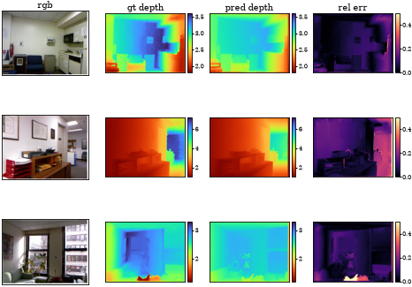
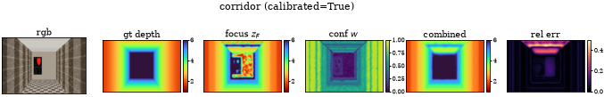
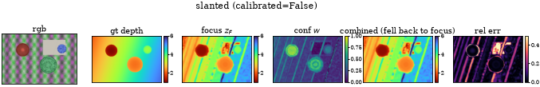
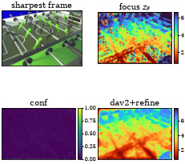

Abstract
Monocular depth estimation assigns a depth to each pixel of a single RGB image, but a single image does not determine absolute scale. This project benchmarks Depth Anything V2, a pretrained relative-depth model, against a classical depth-from-focus baseline that measures local sharpness across a focal stack. We then use confident focus measurements to fit an affine scale correction and a regularized local refinement, recovering metric depth where the stack supports it. Evaluation is on the NYU-Depth v2 test set, rendered synthetic scenes, and the DDFF 12-Scene dataset, reporting AbsRel, RMSE, and δ1.
Methods
Learned baseline
The reference image is passed through Depth Anything V2 (ViT-S) using the published weights, without retraining. The model produces a relative inverse-depth map d̂(x) that captures scene structure but not absolute scale.
Depth from focus
A focal stack is captured from a fixed viewpoint at calibrated focus settings. At each pixel we measure sharpness across the stack with the modified Laplacian (Nayar and Nakagawa, 1994) and interpolate parabolically around the peak setting, giving a focus depth zF(x). Flat or ambiguous focus curves receive low confidence w(x) ∈ [0, 1]; this occurs mainly on textureless surfaces and near depth boundaries. The sharpest pixels across the stack are fused into an all-focus image, which guides a confidence-weighted normalized-convolution smoothing of the raw estimate in inverse-depth space.
Scale fitting and refinement
Confident focus measurements constrain an affine transformation of the predicted inverse depth plus a local correction r:
q(x) = s d̂(x) + t + r(x), z(x) = q(x)−1
mins,t,r ∑x w(x) ρ(q(x) − zF(x)−1) + λ ∑x ||∇r(x)||2 + μ ∑x r(x)2, q(x) ≥ ε > 0
Global scale (s, t) is fit first with r = 0, then local corrections are allowed. The Huber loss ρ limits the influence of unreliable focus measurements; the penalties on ∇r and r discourage abrupt or large changes where focus evidence is weak. If the learned prediction disagrees with the focus measurements (nonpositive fitted slope, or extreme residuals), calibration is rejected and the combined system output falls back to the focus estimate, so the method never does worse than either of its components.
Results
We report absolute relative error (AbsRel), RMSE, and δ1, the fraction of valid pixels satisfying max(z/zgt, zgt/z) < 1.25. The learned baselines are evaluated on the standard 654-image NYU-Depth v2 test set under the Eigen crop. Focal-stack experiments use six rendered synthetic scenes, split into a tuning set (gallery, stairs) used to pick regularization weights and a held-out evaluation set (corridor, objects, slanted, shelves) used for the numbers below, plus DDFF 12-Scene real stacks. Metric predictions are scored without ground-truth alignment; aligned scores are reported separately.
Table 1. NYU-Depth v2 test set (654 images), Eigen crop. Relative-depth checkpoints are aligned per image; the metric indoor checkpoint is also shown unaligned.
| Method | AbsRel | RMSE | δ1 |
|---|---|---|---|
| DA-V2 Small (scale+shift) | 0.062 | 0.297 | 0.956 |
| DA-V2 Small (robust IRLS) | 0.058 | 0.292 | 0.958 |
| DA-V2 Small (median scale) | 0.494 | 2.349 | 0.393 |
| DA-V2 Base (scale+shift) | 0.057 | 0.283 | 0.959 |
| DA-V2 Large (scale+shift) | 0.055 | 0.277 | 0.961 |
| DA-V2 Metric Indoor (unaligned) | 0.218 | 0.650 | 0.670 |
| DA-V2 Metric Indoor (aligned) | 0.077 | 0.353 | 0.936 |
Table 2. Held-out synthetic scenes (corridor, objects, slanted, shelves). Combined uses the refined output where calibration succeeds and the focus estimate where it is rejected.
| Method | AbsRel | RMSE | δ1 |
|---|---|---|---|
| DFF raw | 0.233 | 1.552 | 0.732 |
| DFF + all-focus smooth | 0.221 | 1.510 | 0.702 |
| Aligned DA-V2 | 0.271 | 1.524 | 0.548 |
| DA-V2 + scale fit | 0.308 | 1.614 | 0.459 |
| Refined (ours) | 0.259 | 1.483 | 0.575 |
| Combined (ours) | 0.206 | 1.284 | 0.704 |




One note on the DDFF results: the public test archive contains focal stacks but no registered depth (the official ground truth was withheld for the benchmark server), and the per-frame focus distances are not recorded, so we reconstruct them from the refocus geometry in the paper. Quantitative numbers on real stacks are therefore not meaningful; the qualitative panels above still exercise the full pipeline on camera-captured data. Quantitative evaluation of the refinement uses the rendered scenes, where the true depth and focus distances are known exactly.
Reports
- Project proposal: project_proposal.pdf (also under proposal/ in the repository).
- Midterm report: midterm.pdf; due October 29, posted here after submission.
Code
Source available on GitHub: github.com/DimitriChrysafis/cs566-project. The repository contains the benchmark library under code/depthbench (data loaders, synthetic stack renderer, depth-from-focus, DA-V2 wrapper, scale fitting, metrics) and runnable experiment scripts under code/experiments.
Download: source archive (.zip).
Log
- Oct 1Project scaffold: repository layout, synthetic focal-stack renderer, experiment entry points.
- Oct 2NYU-Depth v2 test split verified; DA-V2 ViT-S weights running on test images.
- Oct 4Modified-Laplacian focus baseline with confidence on synthetic stacks; all-focus guided smoothing added.
- Oct 6Scale fitting + local refinement running on six synthetic scenes; DA-V2 model-size benchmark (S/B/L + metric indoor); DDFF real stacks processed qualitatively.
- NextMidterm report due Oct 29; presentation slides; more DDFF analysis if calibration labels surface.